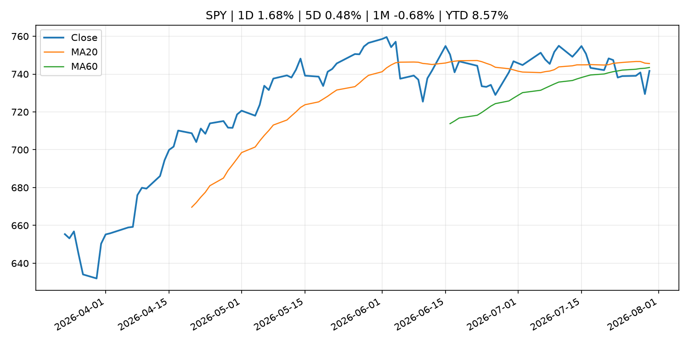
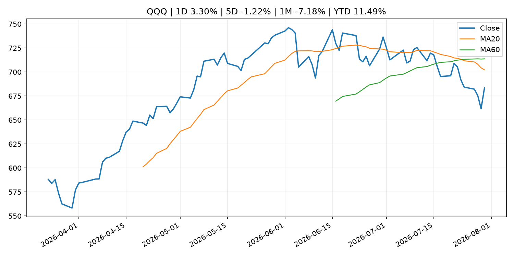
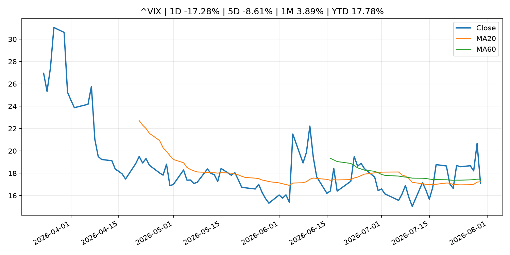
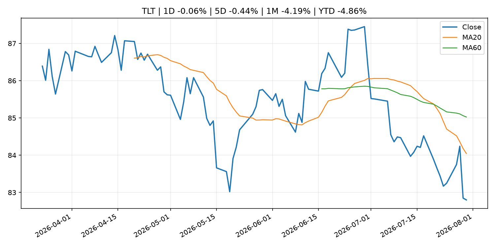
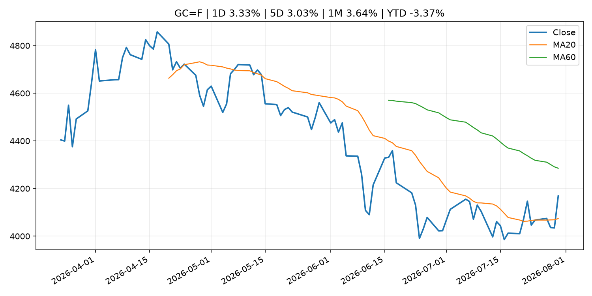
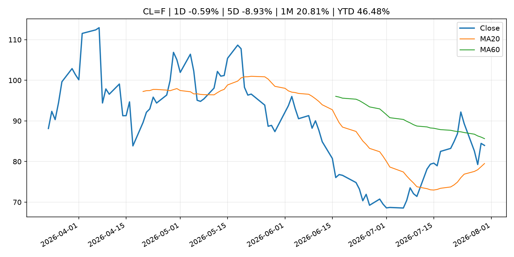
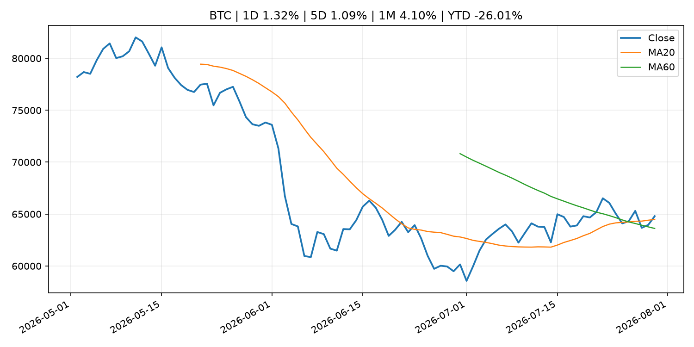
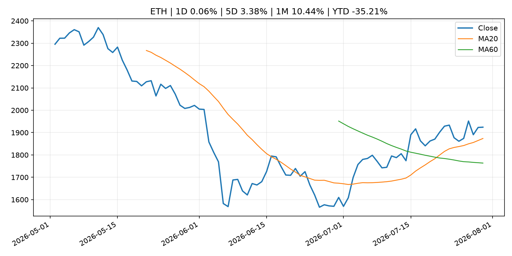
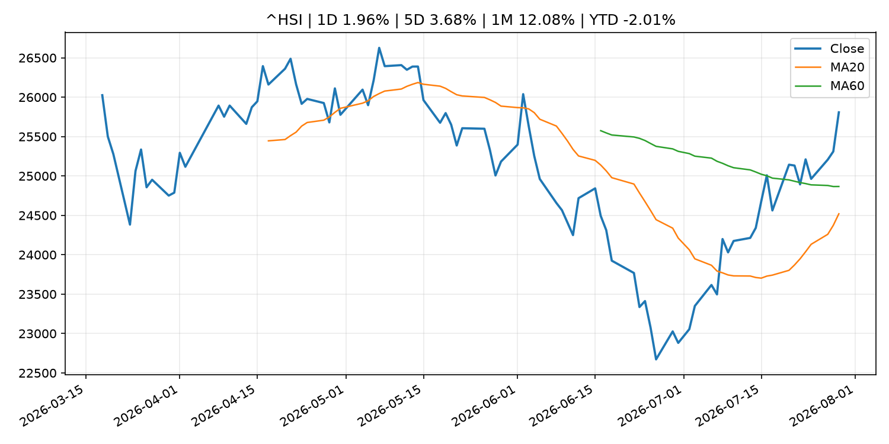

Global Macro Morning Briefing - 2026-07-31
Not financial advice / 非投资建议。
0. 今日总览
- 市场状态：risk_on。股指上涨、波动率或美元回落，市场更接近风险偏好改善。
- 今日三大主线：
- central_bank_decision: Federal Reserve issues FOMC statement
- earnings: Micron, Sandisk and other chip stocks get major boosts in the wake of Microsoft’s earnings
- earnings: Why Microsoft’s stock soared to a historic gain after earnings
- 一句话结论：今日晨报重点关注：央行决策会重定价利率、汇率、久期资产和风险资产。；大型科技股盈利和资本开支会影响纳指、半导体和 AI 交易主线。。跨资产方面，SPY 1D 1.68%；QQQ 1D 3.30%；^VIX 1D -17.28%；TLT 1D -0.06%；GC=F 1D 3.33%；CL=F 1D -0.59%；BTC 1D 1.32%；ETH 1D 0.06%；股指上涨、波动率或美元回落，市场更接近风险偏好改善。政策、通胀、利率、美元、美债、能源和加密监管仍是主要观察线索。所有结论仅基于公开数据与短摘要整理，不构成投资建议。
1. 隔夜跨资产市场
- 美股：SPY 1D 1.68%，QQQ 1D 3.30%，整体趋势需结合 VIX 和利率确认。
- 美债/美元：TLT 1D -0.06%，美元指数 1D -0.82%，是判断折现率压力的核心线索。
- 黄金/原油：黄金 1D 3.33%，原油 1D -0.59%，用于观察避险、通胀和地缘风险。
- 加密：BTC 1D 1.32%，ETH 1D 0.06%，关注是否独立于纳指走出加密自身行情。
- 港股/A股：恒生 1D 1.96%，沪深300/上证 1D n/a，重点看中国政策预期与人民币线索。
- 风险观察：确认风险偏好是否扩散到小盘股、信用利差和周期品。
US_EQUITY
| symbol | latest close | 1D | 5D | 1M | YTD | trend |
|---|---|---|---|---|---|---|
| SPY | 741.69 | 1.68% | 0.48% | -0.68% | 8.57% | range_bound |
| QQQ | 683.55 | 3.30% | -1.22% | -7.18% | 11.49% | strong_downtrend |
| DIA | 521.51 | 1.18% | 1.02% | -0.17% | 7.83% | range_bound |
| IWM | 292.59 | 1.39% | 0.17% | -2.62% | 17.61% | range_bound |
| VTI | 366.27 | 1.62% | 0.43% | -1.02% | 8.91% | range_bound |
US_MACRO_MARKET
| symbol | latest close | 1D | 5D | 1M | YTD | trend |
|---|---|---|---|---|---|---|
| ^VIX | 17.09 | -17.28% | -8.61% | 3.89% | 17.78% | downtrend |
| DX-Y.NYB | 99.97 | -0.82% | -1.44% | -1.21% | 1.57% | range_bound |
| TLT | 82.80 | -0.06% | -0.44% | -4.19% | -4.86% | strong_downtrend |
| IEF | 93.21 | 0.04% | 0.39% | -1.44% | -2.99% | downtrend |
COMMODITIES
| symbol | latest close | 1D | 5D | 1M | YTD | trend |
|---|---|---|---|---|---|---|
| GC=F | 4,169.20 | 3.33% | 3.03% | 3.64% | -3.37% | range_bound |
| SI=F | 59.31 | 2.49% | 2.61% | -0.29% | -15.95% | range_bound |
| CL=F | 83.96 | -0.59% | -8.93% | 20.81% | 46.48% | range_bound |
| BZ=F | 89.45 | -1.42% | -11.16% | 22.67% | 47.24% | range_bound |
| NG=F | 2.75 | 0.77% | -5.83% | -16.15% | -24.10% | strong_downtrend |
| HG=F | 6.50 | 3.63% | 3.12% | 4.99% | 15.27% | range_bound |
HK_MARKET
| symbol | latest close | 1D | 5D | 1M | YTD | trend |
|---|---|---|---|---|---|---|
| ^HSI | 25,807.92 | 1.96% | 3.68% | 12.08% | -2.01% | range_bound |
| 0700.HK | 471.80 | 1.16% | 5.97% | 9.77% | -24.27% | uptrend |
| 9988.HK | 111.80 | -1.58% | -2.70% | 20.41% | -24.97% | range_bound |
| 3690.HK | 92.65 | 0.38% | 6.13% | 35.26% | -11.42% | strong_uptrend |
| 1810.HK | 31.04 | -2.63% | 14.37% | 43.44% | -22.94% | range_bound |
| 1211.HK | 94.80 | 1.28% | 6.94% | 30.85% | -4.00% | range_bound |
CRYPTO
| symbol | latest close | 1D | 5D | 1M | YTD | trend |
|---|---|---|---|---|---|---|
| BTC | 64,799.72 | 1.32% | 1.09% | 4.10% | -26.01% | uptrend |
| ETH | 1,924.20 | 0.06% | 3.38% | 10.44% | -35.21% | uptrend |
| SOLANA | 74.68 | 1.06% | 1.02% | -4.00% | -40.03% | range_bound |
| BINANCECOIN | 592.12 | 3.78% | 4.92% | 4.21% | -31.40% | range_bound |
| RIPPLE | 1.08 | 1.68% | -0.54% | -0.37% | -41.02% | downtrend |
2. 今日最重要的 10 条新闻
1. Federal Reserve issues FOMC statement
- 来源：Federal Reserve Press Releases
- 时间：2026-07-29T18:00:00+00:00
- 地区：US
- 事件类型：central_bank_decision
- 重要性层级：Tier 1
- 一句话摘要：Federal Reserve issues FOMC statement
- 为什么重要：央行决策会重定价利率、汇率、久期资产和风险资产。
- 可能影响：可能影响利率、汇率、风险资产或大宗商品预期，但当前公开信息不足以判断明确方向。
- 资产：暂无明确资产映射
- 方向：unknown
- 强度：low
- 原因：公开信息不足以判断方向。
- 原文链接：https://www.federalreserve.gov/newsevents/pressreleases/monetary20260729a.htm
2. Micron, Sandisk and other chip stocks get major boosts in the wake of Microsoft’s earnings
- 来源：MarketWatch Top Stories
- 时间：2026-07-30T20:26:00+00:00
- 地区：US
- 事件类型：earnings
- 重要性层级：Tier 2
- 一句话摘要：Microsoft is spending heavily on AI but is also taking a “responsible” approach to its financials, an analyst said.
- 为什么重要：大型科技股盈利和资本开支会影响纳指、半导体和 AI 交易主线。
- 可能影响：主要影响 QQQ，方向为 mixed，强度 high；AI 资本开支会影响大型科技股盈利和估值预期。
- 资产：QQQ 方向：mixed 强度：high 原因：AI 资本开支会影响大型科技股盈利和估值预期。
- 资产：SMH 方向：mixed 强度：high 原因：AI 投资周期直接影响半导体需求。
- 资产：NVDA 方向：mixed 强度：high 原因：AI 训练和推理需求是英伟达收入预期核心变量。
- 资产：MSFT 方向：mixed 强度：medium 原因：云和 AI 资本开支影响利润率与增长叙事。
- 资产：GOOGL 方向：mixed 强度：medium 原因：AI 投资和搜索商业化影响估值。
- 资产：META 方向：mixed 强度：medium 原因：AI 基建支出与广告效率共同影响市场预期。
- 原文链接：https://www.marketwatch.com/story/micron-sandisk-and-other-chip-stocks-get-major-boosts-in-the-wake-of-microsofts-earnings-25460e61?mod=mw_rss_topstories
3. Why Microsoft’s stock soared to a historic gain after earnings
- 来源：MarketWatch Top Stories
- 时间：2026-07-30T20:21:00+00:00
- 地区：US
- 事件类型：earnings
- 重要性层级：Tier 2
- 一句话摘要：The company’s cloud business is sporting impressive growth, and Microsoft expects to avoid heading into cash-burn mode as it spends up on AI.
- 为什么重要：大型科技股盈利和资本开支会影响纳指、半导体和 AI 交易主线。
- 可能影响：主要影响 QQQ，方向为 mixed，强度 high；AI 资本开支会影响大型科技股盈利和估值预期。
- 资产：QQQ 方向：mixed 强度：high 原因：AI 资本开支会影响大型科技股盈利和估值预期。
- 资产：SMH 方向：mixed 强度：high 原因：AI 投资周期直接影响半导体需求。
- 资产：NVDA 方向：mixed 强度：high 原因：AI 训练和推理需求是英伟达收入预期核心变量。
- 资产：MSFT 方向：mixed 强度：medium 原因：云和 AI 资本开支影响利润率与增长叙事。
- 资产：GOOGL 方向：mixed 强度：medium 原因：AI 投资和搜索商业化影响估值。
- 资产：META 方向：mixed 强度：medium 原因：AI 基建支出与广告效率共同影响市场预期。
- 原文链接：https://www.marketwatch.com/story/why-microsofts-stock-is-soaring-toward-a-historic-gain-after-earnings-96cd5b1e?mod=mw_rss_topstories
4. Warsh’s Wall Street cred takes a hit as investors doubt the Fed chair’s inflation-fighting resolve
- 来源：MarketWatch Top Stories
- 时间：2026-07-30T19:02:00+00:00
- 地区：US
- 事件类型：central_bank_speech
- 重要性层级：Tier 2
- 一句话摘要：Kevin Warsh insists the Federal Reserve will do whatever it takes to reduce U.S. inflation to its 2% target, but investors aren’t buying it.
- 为什么重要：央行官员表态可能影响市场对下一次会议的定价。
- 可能影响：主要影响 DXY，方向为 positive，强度 high；通胀压力可能推高政策利率预期并支撑美元。
- 资产：DXY 方向：positive 强度：high 原因：通胀压力可能推高政策利率预期并支撑美元。
- 资产：TLT 方向：negative 强度：high 原因：通胀上行通常推升收益率、压低长债价格。
- 资产：QQQ 方向：negative 强度：high 原因：更高利率对成长股估值折现率不利。
- 资产：SPY 方向：mixed 强度：medium 原因：名义增长可能支撑收入，但更高利率压制估值。
- 资产：GC=F 方向：mixed 强度：medium 原因：通胀对黄金是支撑，但实际利率上行会形成压力。
- 资产：BTC 方向：mixed 强度：medium 原因：抗通胀叙事和流动性收紧可能相互抵消。
- 原文链接：https://www.marketwatch.com/story/warshs-wall-street-cred-takes-a-hit-as-investors-doubt-the-fed-chairs-inflation-fighting-resolve-82be4f77?mod=mw_rss_topstories
5. Bitcoin analysts agree the Fed's hold was hawkish. They are split on what happens next.
- 来源：CoinDesk
- 时间：2026-07-30T06:28:58+00:00
- 地区：global
- 事件类型：central_bank_speech
- 重要性层级：Tier 2
- 一句话摘要：Bitcoin analysts agree the Fed's hold was hawkish. They are split on what happens next.
- 为什么重要：央行官员表态可能影响市场对下一次会议的定价。
- 可能影响：主要影响 QQQ，方向为 negative，强度 high；鹰派政策提高折现率，压制成长股估值。
- 资产：QQQ 方向：negative 强度：high 原因：鹰派政策提高折现率，压制成长股估值。
- 资产：SPY 方向：negative 强度：medium 原因：更紧政策通常削弱风险偏好。
- 资产：TLT 方向：negative 强度：high 原因：利率上行通常压低长债价格。
- 资产：DXY 方向：positive 强度：high 原因：更高利率预期通常支撑美元。
- 资产：BTC 方向：negative 强度：high 原因：流动性收紧通常压制高 beta 加密资产。
- 原文链接：https://www.coindesk.com/markets/2026/07/30/bitcoin-analysts-agree-the-fed-s-hold-was-hawkish-they-don-t-agree-on-what-happens-next
6. SEC Announces Continuation of Small Business Advisory Committee Meeting
- 来源：SEC Press Releases
- 时间：2026-07-30T09:53:38-04:00
- 地区：US
- 事件类型：regulation
- 重要性层级：Tier 2
- 一句话摘要：The Securities and Exchange Commission announced that the Small Business Capital Formation Advisory Committee meeting held on July 21, 2026, will reconvene August 6, 2026, at 1 p.m. ET, virtually, on SEC.gov. The committee will…
- 为什么重要：监管变化会改变行业盈利预期和资产风险溢价。
- 可能影响：主要影响 BTC，方向为 mixed，强度 high；加密监管或 ETF 进展会改变 BTC 的资金流和风险溢价。
- 资产：BTC 方向：mixed 强度：high 原因：加密监管或 ETF 进展会改变 BTC 的资金流和风险溢价。
- 资产：ETH 方向：mixed 强度：high 原因：监管框架会影响 ETH 产品化和机构参与度。
- 资产：COIN 方向：mixed 强度：medium 原因：监管清晰度和执法风险会影响交易平台估值。
- 资产：crypto market 方向：mixed 强度：high 原因：信息影响整个加密市场结构，但方向取决于细节。
- 原文链接：https://www.sec.gov/newsroom/press-releases/2026-71-sec-announces-continuation-small-business-advisory-committee-meeting
7. Federal Reserve Board issues enforcement actions with former employee of Regions Bank and former employee of First Interstate Bank
- 来源：Federal Reserve Press Releases
- 时间：2026-07-30T15:00:00+00:00
- 地区：US
- 事件类型：regulation
- 重要性层级：Tier 2
- 一句话摘要：Federal Reserve Board issues enforcement actions with former employee of Regions Bank and former employee of First Interstate Bank
- 为什么重要：监管变化会改变行业盈利预期和资产风险溢价。
- 可能影响：可能影响利率、汇率、风险资产或大宗商品预期，但当前公开信息不足以判断明确方向。
- 资产：暂无明确资产映射
- 方向：unknown
- 强度：low
- 原因：公开信息不足以判断方向。
- 原文链接：https://www.federalreserve.gov/newsevents/pressreleases/enforcement20260730a.htm
8. Federal Reserve Board issues enforcement action with Iuka Bancshares, Inc. and The Iuka State Bank
- 来源：Federal Reserve Press Releases
- 时间：2026-07-30T15:00:00+00:00
- 地区：US
- 事件类型：regulation
- 重要性层级：Tier 2
- 一句话摘要：Federal Reserve Board issues enforcement action with Iuka Bancshares, Inc. and The Iuka State Bank
- 为什么重要：监管变化会改变行业盈利预期和资产风险溢价。
- 可能影响：可能影响利率、汇率、风险资产或大宗商品预期，但当前公开信息不足以判断明确方向。
- 资产：暂无明确资产映射
- 方向：unknown
- 强度：low
- 原因：公开信息不足以判断方向。
- 原文链接：https://www.federalreserve.gov/newsevents/pressreleases/enforcement20260730b.htm
9. Jeffrey Gundlach says the bond market is telling Warsh the Fed has to start acting on inflation
- 来源：CNBC Economy
- 时间：2026-07-29T22:20:18+00:00
- 地区：US
- 事件类型：other
- 重要性层级：Tier 3
- 一句话摘要：Gundlach said the divergent moves across the Treasury curve showed investors' skepticism that the Fed will ultimately follow through.
- 为什么重要：这条信息暂未匹配到重大宏观、政策或市场事件，更适合作为背景跟踪。
- 可能影响：主要影响 DXY，方向为 positive，强度 high；通胀压力可能推高政策利率预期并支撑美元。
- 资产：DXY 方向：positive 强度：high 原因：通胀压力可能推高政策利率预期并支撑美元。
- 资产：TLT 方向：negative 强度：high 原因：通胀上行通常推升收益率、压低长债价格。
- 资产：QQQ 方向：negative 强度：high 原因：更高利率对成长股估值折现率不利。
- 资产：SPY 方向：mixed 强度：medium 原因：名义增长可能支撑收入，但更高利率压制估值。
- 资产：GC=F 方向：mixed 强度：medium 原因：通胀对黄金是支撑，但实际利率上行会形成压力。
- 资产：BTC 方向：mixed 强度：medium 原因：抗通胀叙事和流动性收紧可能相互抵消。
- 原文链接：https://www.cnbc.com/2026/07/29/gundlach-says-the-bond-market-is-signaling-the-fed-has-to-act-on-inflation.html
10. Strategy books $8.2 billion Q2 loss on bitcoin price decline
- 来源：CoinDesk
- 时间：2026-07-30T20:32:13+00:00
- 地区：global
- 事件类型：other
- 重要性层级：Tier 3
- 一句话摘要：Strategy books $8.2 billion Q2 loss on bitcoin price decline
- 为什么重要：这条信息暂未匹配到重大宏观、政策或市场事件，更适合作为背景跟踪。
- 可能影响：更偏背景信息，短期市场影响可能有限。
- 资产：暂无明确资产映射
- 方向：unknown
- 强度：low
- 原因：公开信息不足以判断方向。
- 原文链接：https://www.coindesk.com/markets/2026/07/30/strategy-books-usd8-2-billion-second-quarter-loss-on-bitcoin-price-decline
3. 政策与央行观察
1. Federal Reserve issues FOMC statement
- 来源：Federal Reserve Press Releases
- 时间：2026-07-29T18:00:00+00:00
- 地区：US
- 事件类型：central_bank_decision
- 重要性层级：Tier 1
- 一句话摘要：Federal Reserve issues FOMC statement
- 为什么重要：央行决策会重定价利率、汇率、久期资产和风险资产。
- 可能影响：可能影响利率、汇率、风险资产或大宗商品预期，但当前公开信息不足以判断明确方向。
- 资产：暂无明确资产映射
- 方向：unknown
- 强度：low
- 原因：公开信息不足以判断方向。
- 原文链接：https://www.federalreserve.gov/newsevents/pressreleases/monetary20260729a.htm
2. Warsh’s Wall Street cred takes a hit as investors doubt the Fed chair’s inflation-fighting resolve
- 来源：MarketWatch Top Stories
- 时间：2026-07-30T19:02:00+00:00
- 地区：US
- 事件类型：central_bank_speech
- 重要性层级：Tier 2
- 一句话摘要：Kevin Warsh insists the Federal Reserve will do whatever it takes to reduce U.S. inflation to its 2% target, but investors aren’t buying it.
- 为什么重要：央行官员表态可能影响市场对下一次会议的定价。
- 可能影响：主要影响 DXY，方向为 positive，强度 high；通胀压力可能推高政策利率预期并支撑美元。
- 资产：DXY 方向：positive 强度：high 原因：通胀压力可能推高政策利率预期并支撑美元。
- 资产：TLT 方向：negative 强度：high 原因：通胀上行通常推升收益率、压低长债价格。
- 资产：QQQ 方向：negative 强度：high 原因：更高利率对成长股估值折现率不利。
- 资产：SPY 方向：mixed 强度：medium 原因：名义增长可能支撑收入，但更高利率压制估值。
- 资产：GC=F 方向：mixed 强度：medium 原因：通胀对黄金是支撑，但实际利率上行会形成压力。
- 资产：BTC 方向：mixed 强度：medium 原因：抗通胀叙事和流动性收紧可能相互抵消。
- 原文链接：https://www.marketwatch.com/story/warshs-wall-street-cred-takes-a-hit-as-investors-doubt-the-fed-chairs-inflation-fighting-resolve-82be4f77?mod=mw_rss_topstories
3. Bitcoin analysts agree the Fed's hold was hawkish. They are split on what happens next.
- 来源：CoinDesk
- 时间：2026-07-30T06:28:58+00:00
- 地区：global
- 事件类型：central_bank_speech
- 重要性层级：Tier 2
- 一句话摘要：Bitcoin analysts agree the Fed's hold was hawkish. They are split on what happens next.
- 为什么重要：央行官员表态可能影响市场对下一次会议的定价。
- 可能影响：主要影响 QQQ，方向为 negative，强度 high；鹰派政策提高折现率，压制成长股估值。
- 资产：QQQ 方向：negative 强度：high 原因：鹰派政策提高折现率，压制成长股估值。
- 资产：SPY 方向：negative 强度：medium 原因：更紧政策通常削弱风险偏好。
- 资产：TLT 方向：negative 强度：high 原因：利率上行通常压低长债价格。
- 资产：DXY 方向：positive 强度：high 原因：更高利率预期通常支撑美元。
- 资产：BTC 方向：negative 强度：high 原因：流动性收紧通常压制高 beta 加密资产。
- 原文链接：https://www.coindesk.com/markets/2026/07/30/bitcoin-analysts-agree-the-fed-s-hold-was-hawkish-they-don-t-agree-on-what-happens-next
4. SEC Announces Continuation of Small Business Advisory Committee Meeting
- 来源：SEC Press Releases
- 时间：2026-07-30T09:53:38-04:00
- 地区：US
- 事件类型：regulation
- 重要性层级：Tier 2
- 一句话摘要：The Securities and Exchange Commission announced that the Small Business Capital Formation Advisory Committee meeting held on July 21, 2026, will reconvene August 6, 2026, at 1 p.m. ET, virtually, on SEC.gov. The committee will…
- 为什么重要：监管变化会改变行业盈利预期和资产风险溢价。
- 可能影响：主要影响 BTC，方向为 mixed，强度 high；加密监管或 ETF 进展会改变 BTC 的资金流和风险溢价。
- 资产：BTC 方向：mixed 强度：high 原因：加密监管或 ETF 进展会改变 BTC 的资金流和风险溢价。
- 资产：ETH 方向：mixed 强度：high 原因：监管框架会影响 ETH 产品化和机构参与度。
- 资产：COIN 方向：mixed 强度：medium 原因：监管清晰度和执法风险会影响交易平台估值。
- 资产：crypto market 方向：mixed 强度：high 原因：信息影响整个加密市场结构，但方向取决于细节。
- 原文链接：https://www.sec.gov/newsroom/press-releases/2026-71-sec-announces-continuation-small-business-advisory-committee-meeting
5. Federal Reserve Board issues enforcement actions with former employee of Regions Bank and former employee of First Interstate Bank
- 来源：Federal Reserve Press Releases
- 时间：2026-07-30T15:00:00+00:00
- 地区：US
- 事件类型：regulation
- 重要性层级：Tier 2
- 一句话摘要：Federal Reserve Board issues enforcement actions with former employee of Regions Bank and former employee of First Interstate Bank
- 为什么重要：监管变化会改变行业盈利预期和资产风险溢价。
- 可能影响：可能影响利率、汇率、风险资产或大宗商品预期，但当前公开信息不足以判断明确方向。
- 资产：暂无明确资产映射
- 方向：unknown
- 强度：low
- 原因：公开信息不足以判断方向。
- 原文链接：https://www.federalreserve.gov/newsevents/pressreleases/enforcement20260730a.htm
6. Federal Reserve Board issues enforcement action with Iuka Bancshares, Inc. and The Iuka State Bank
- 来源：Federal Reserve Press Releases
- 时间：2026-07-30T15:00:00+00:00
- 地区：US
- 事件类型：regulation
- 重要性层级：Tier 2
- 一句话摘要：Federal Reserve Board issues enforcement action with Iuka Bancshares, Inc. and The Iuka State Bank
- 为什么重要：监管变化会改变行业盈利预期和资产风险溢价。
- 可能影响：可能影响利率、汇率、风险资产或大宗商品预期，但当前公开信息不足以判断明确方向。
- 资产：暂无明确资产映射
- 方向：unknown
- 强度：low
- 原因：公开信息不足以判断方向。
- 原文链接：https://www.federalreserve.gov/newsevents/pressreleases/enforcement20260730b.htm
4. 市场异动与图表
- SPY 上涨 1.68%
- QQQ 上涨 3.30%
- VIX 下跌 -17.28%
- DXY 下跌 -0.82%
- Gold 上涨 3.33%
SPY

QQQ

^VIX

TLT

GC=F

CL=F

BTC

ETH

^HSI

5. 华尔街与机构公开观点
- 暂无可靠公开观点。
6. 今日重点关注
- 经济数据：经济数据：暂无可靠公开日历数据；如配置经济日历源后可自动填充。
- 央行讲话：央行讲话：暂无可靠公开日历数据；重点跟踪 Fed、ECB、BoJ、PBOC 官网 RSS。
- 财报：财报：暂无可靠数据。
- 政策事件：政策事件：暂无可靠数据。
- 风险提醒：风险提醒：关注数据源失败项、突发地缘风险、利率和美元的二阶反应。
7. 英文金融表达与宏观概念
- inflation expectations：通胀预期，指家庭、企业或市场对未来通胀的预估。 例句：Inflation expectations can shape wage bargaining and bond yields.
- real yield：实际收益率，名义利率扣除通胀预期后的收益率。 例句：Gold often reacts more to real yields than nominal yields.
- terminal rate：终端利率，市场预期本轮加息周期的最高政策利率。 例句：A higher terminal rate can pressure growth stocks.
- risk-off：避险模式，资金偏向美元、国债、黄金等防御资产。 例句：A geopolitical shock can push markets into risk-off mode.
- market structure：市场结构，指交易、托管、清算、ETF、监管等制度安排。 例句：Crypto market structure rules can affect institutional participation.
- AI capex：AI 资本开支，指云厂商和科技公司投入 AI 基建的支出。 例句：AI capex guidance can move semiconductor stocks.
8. 背景材料
- Strategy books $8.2 billion Q2 loss on bitcoin price decline（CoinDesk，other）：Strategy books $8.2 billion Q2 loss on bitcoin price decline
- Coinbase sinks 5% after missing second quarter revenue estimates（CoinDesk，other）：Coinbase sinks 5% after missing second quarter revenue estimates
- Ethereum enters its second decade after a year of upheaval at the foundation（CoinDesk，other）：Ethereum enters its second decade after a year of upheaval at the foundation
- Here's what changed in the second Fed statement under Warsh（CNBC Economy，other）：This is a comparison of Wednesday's Federal Open Market Committee statement with the one issued after the Fed's previous policymaking meeting in June.
- Bitcoin ETFs on track for the smallest monthly inflows ever（CoinDesk，other）：Bitcoin ETFs on track for the smallest monthly inflows ever
- Live updates: Bitcoin holds above $64,000 as Nasdaq surges on AI trade comeback（CoinDesk，other）：Live updates: Bitcoin holds above $64,000 as Nasdaq surges on AI trade comeback
- Bitcoin and ether markets are ruled by perps. SpaceX showed how far their influence can go（CoinDesk，other）：Bitcoin and ether markets are ruled by perps. SpaceX showed how far their influence can go
- Digital euro app to incorporate highest accessibility standards（ECB Press Releases，other）：Digital euro app to incorporate highest accessibility standards
- Bitcoin, ether whipsaw wipes out $286 million in leveraged bets（CoinDesk，other）：Bitcoin, ether whipsaw wipes out $286 million in leveraged bets
- Bitcoin's quantum plan assumes some algorithms break. AI just weakened one in 60 hours（CoinDesk，other）：Bitcoin's quantum plan assumes some algorithms break. AI just weakened one in 60 hours
- Here are the five big takeaways from this week's Fed meeting（CNBC Economy，other）：The Federal Reserve on Wednesday followed through on expectations for no interest rate change.
- Jeffrey Gundlach says the bond market is telling Warsh the Fed has to start acting on inflation（CNBC Economy，other）：Gundlach said the divergent moves across the Treasury curve showed investors' skepticism that the Fed will ultimately follow through.
- ECB wage tracker at 2.7% in Q1 2027, indicating stable negotiated wage pressures（ECB Press Releases，other）：ECB wage tracker at 2.7% in Q1 2027, indicating stable negotiated wage pressures
- Average Contract Interest Rates on Loans and Discounts (June)（Bank of Japan Announcements，other）：Average Contract Interest Rates on Loans and Discounts (June)
9. 数据源、失败项与免责声明
- 采集时间：2026-07-30T23:04:17
- 数据源：公开 RSS、Yahoo Finance、CoinGecko、AKShare、FRED、SEC data.sec.gov，以及用户自有 inputs/reports 文件。
- 合规说明：不绕过 WSJ、Bloomberg、FT、Reuters 等付费墙；对付费媒体只使用公开 RSS 标题、摘要、链接和发布时间。
- 免责声明：Not financial advice / 非投资建议。本项目仅供个人学习、研究和信息整理，不构成投资建议、交易建议或任何收益承诺。
- 失败或跳过的数据源：
- crypto data failed coin=dogecoin
- China market data failed symbol=上证指数: empty dataframe
- China market data failed symbol=深证成指: empty dataframe
- China market data failed symbol=创业板指: empty dataframe
- China market data failed symbol=沪深300: empty dataframe
- China market data failed symbol=中证500: empty dataframe
- China market data failed symbol=科创50: empty dataframe
- FRED_API_KEY not set; skipping FRED macro series
- SEC failed cik=0000320193
- SEC failed cik=0000789019
- SEC failed cik=0001045810
- SEC failed cik=0001318605
- SEC failed cik=0001577552